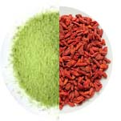
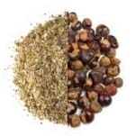
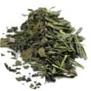
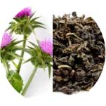
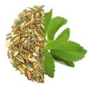
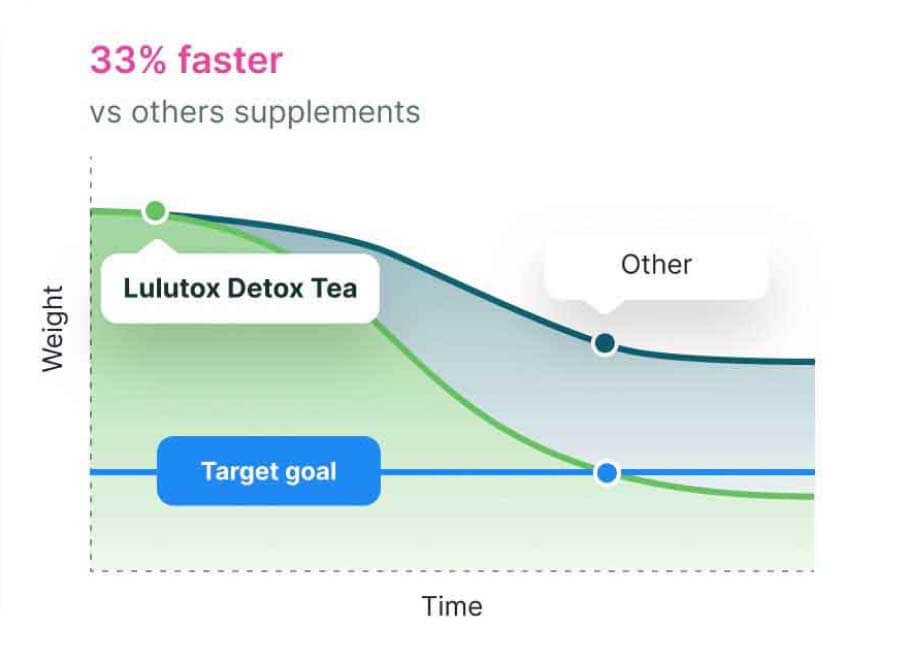

Dieser Superfood-Detox-Tee hat mich vor Verzicht, Diäten und endlosen Workouts gerettet (Ich habe tatsächlich schneller abgenommen!)

Bekannt aus:
der Kunden wählen Lulutox Detox-Tee für eine natürliche Gewichtsabnahme.
Ich habe schon oft zu- und wieder abgenommen.
Ich bin schließlich eine Frau – ich habe Hormone. Ich bin durch die Pubertät gegangen, habe 3 Kinder zur Welt gebracht und hin und wieder dem Stressessen nachgegeben. Aber dieses Mal war es anders.
Ich wurde dieses zusätzliche Gewicht einfach NICHT los!
Nach Monaten voller Diäten (ich habe praktisch jede Diät im Buch ausprobiert)...
Kalorien zählen, Makros tracken, Fasten und Sport bis zur Erschöpfung...
Ich war am Tiefpunkt. Ich konnte einfach keine weitere Diät machen oder noch eine Lebensmittelgruppe streichen. Ich hatte die Nase voll vom Diäten.
Aber ich hatte auch die Nase voll davon, mich träge und aufgebläht zu fühlen!
Ich fühlte mich einfach nicht mehr wie ich selbst. Ich hatte keine Energie, keinen Funken und kein Selbstvertrauen mehr.
Ich fühlte mich so gefangen! Es schien, als hätte ich nur zwei schreckliche Möglichkeiten:
1. Gebe ich auf und bleibe für immer unglücklich? Oder...
2. Ergreife ich extreme Maßnahmen und gebe Tausende von Euros für Abnehmmittel oder Operationen aus?
Kommt Ihnen das bekannt vor?
Was wäre, wenn ich einen Weg finden könnte, abzunehmen, der keine extremen Maßnahmen oder Unmengen an Geld erfordert? Was wäre, wenn ich so viele Superfoods zu mir nehmen könnte, dass mein Körper sich entspannen und das überschüssige Gewicht loslassen könnte?
Wäre es nicht schön, einfach gesundes Essen wie ein NORMALER MENSCH zu essen und moderat Sport zu treiben...
Und mich dabei schlank und gesund zu fühlen?
Ich meine, ja! Das wäre ein TRAUM!
Endlich können Frauen wie ich einen normalen, gesunden Lebensstil führen und ihr Gewicht kontrollieren. Und das alles dank eines köstlichen Detox-Tees namens Lulutox.
Was ist das?

Er heißt Lulutox und ist ein Superfood-Detox-Tee, der Ihrem Körper all die Unterstützung gibt, die er braucht, um überschüssiges Gewicht loszulassen.
Er ist vollgepackt mit 12 bewährten Inhaltsstoffen, die Fett verbrennen, das Immunsystem stärken, die Energie steigern und Blähungen reduzieren. Er enthält:
-

Matcha Grüntee & Goji-Beeren um Kalorien zu verbrennen, den Gewichtsverlust zu fördern, Antioxidantien zu erhöhen und Aminosäuren zu liefern.
-

Yerba Mate & Guarana für mehr Fokus und Klarheit, um den Körper zu energetisieren und den Geist zu klären.
-

Sencha Grüntee & Brennnesselblatt zur Stärkung der Abwehrkräfte, Reduzierung systemischer Reizungen und Zufuhr von Antioxidantien.
-

Oolong-Tee & Mariendistel um das System zu beruhigen, die allgemeine Gesundheit zu fördern und Vitamine sowie Mineralien hinzuzufügen.
-
Ginseng & Löwenzahnblatt zur Senkung des Blutdrucks, Reduzierung von Stress und Unterstützung beim Abnehmen.
-

Zitronengras & Stevia-Blatt zur Verbesserung der Verdauung und Darmgesundheit mit einem süßen Zitronengeschmack.
Lulutox Detox-Tee ist einfach anzuwenden. Sie brühen ihn einfach auf und trinken ihn heiß oder kalt!
Manche beschreiben Lulutox als großartige Möglichkeit, Heißhunger zu bekämpfen oder Blähungen zu besiegen. Mir persönlich hat er den Vorteil verschafft, den ich brauchte, um mühelos bessere Ernährungsentscheidungen zu treffen. Und er hilft, meinen Stress zu senken, was meiner Meinung nach das Abnehmen vorher so schwer gemacht hat.
Wie funktioniert es?

“ICH LIEBE ES! So ein einfacher Weg, meine Abnehmreise zu beginnen...” – Kelly P.
Lulutox wirkt auf verschiedene Weisen.
Zunächst einmal ist das Hinsetzen und Trinken einer Tasse Tee ein sehr beruhigender Akt der Selbstliebe. Allein das Ritual kann helfen, Stress abzubauen und Positivität zu fördern... was wiederum gegen den Blähbauch hilft.
Aber die holistische Formel von Lulutox unterstützt Ihren Körper mit Nährstoffen, die es Ihnen ermöglichen, die hartnäckigen Kilos endlich loszulassen.
Für wen ist Lulutox geeignet?
Ob Sie abnehmen möchten, Ihr aktuelles Gewicht halten wollen oder Ihren Körper einfach mit gesunden Superfoods stärken möchten – Lulutox kann helfen. Das liegt daran, dass Lulutox helfen kann:
- Stress zu reduzieren
- Blähungen zu bekämpfen
- Heißhunger zu besiegen
- Fett zu verbrennen
- Energie zu steigern
- Das allgemeine Wohlbefinden zu verbessern
Was ich sonst noch an Lulutox liebe
- Es ist mühelos - Früher haben mich restriktive Diäten und zeitraubende Workouts unglücklich gemacht. Aber eine Tasse Tee zu trinken ist einfach!
- Kleine Veränderung, große Wirkung - Kleine Gewohnheiten summieren sich. Ich füge Lulutox meinem Leben hinzu, ich verzichte auf nichts!
- Gesunde Superfoods - Nahrung kann Medizin sein! Die Integration kraftvoller funktioneller Lebensmittel kann einen großen Einfluss auf Ihre Gesundheit haben.
- Risikofrei für 30 Tage - Wenn Lulutox nicht funktioniert, kein Problem! Sie können Ihr Geld einen ganzen Monat lang zurückbekommen!
SPEZIAL-ANGEBOT FÜR UNSERE LESER
Für eine begrenzte Zeit bietet Lulutox satte 70% Rabatt an, wenn Sie den untenstehenden Link nutzen!
Wir wissen nicht, wie lange dieses Schnäppchen verfügbar sein wird...
LULUTOX JETZT SICHERN >>Echte Bewertungen von echten Kunden
Blähbauch weg!
"Ich kann nicht genug von diesem Tee bekommen, ich trinke ihn jetzt seit 2 Monaten. Eine Tasse am Tag und mein aufgeblähtes Gefühl ist weg. Es ist köstlich und wirklich ein toller Fund."
Bessere Essensentscheidungen
"Ich liebe den Detox-Tee wirklich! Ich benutze ihn seit etwa zwei Monaten einmal täglich und merke bereits einen Unterschied in meinem Bauch. Das hat mir die Motivation gegeben, bessere Essensentscheidungen zu treffen!"
Über 20 Kilo runter!
"Es funktioniert - von 86 auf 64 Kilo! Ich bin über 20 kg los. Ich liebe es! Insgesamt ein tolles Produkt, ich bin nach meiner ersten Bestellung Stammkunde geworden!"